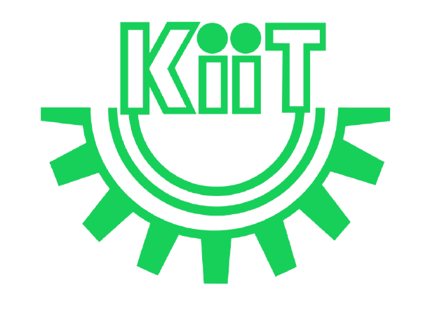
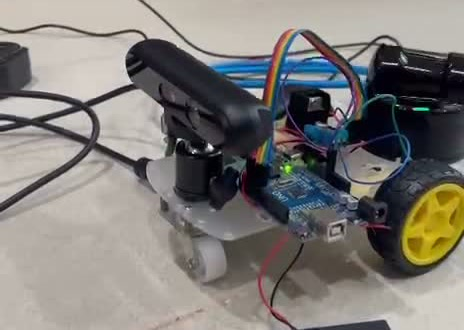
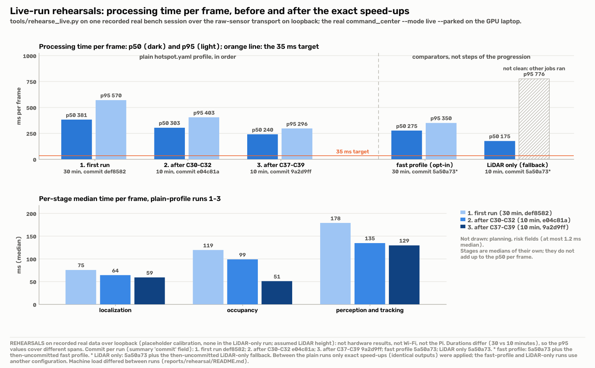
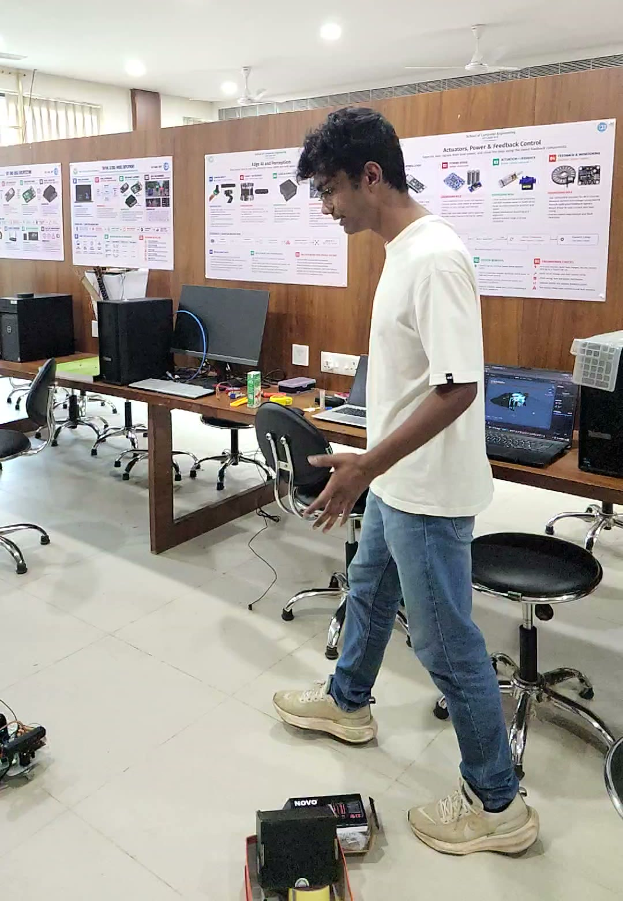
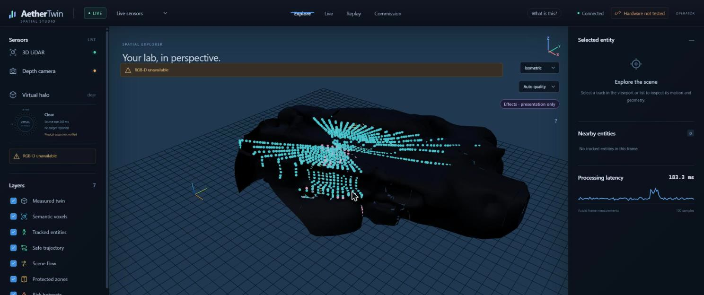

Build twin (offline): a recording is registered scan by scan (4 sweeps a scan, auto IMU bias) and fused. Live, "parked": the cart localizes once on the twin, then holds; perception and tracking run every frame.
L2 upright, window 9.0 cm above the floor; Gemini 336L 21 cm in front and 2.5 cm higher; cart 22.9 x 15.2 cm. The cart's own body is masked in software.
Own raw-sensor transport protocol; 713 automated Python tests (21 Nov), web unit and Playwright E2E tests, local CI. Libraries: NumPy, SciPy, Open3D, OpenCV, PyTorch, MuJoCo.

| Test | Result | What the number means |
|---|---|---|
| BENCHFirst Pi-to-laptop stream over Wi-Fi | 60 s · 716 frames · 0 lost · 5.17 MB/s | transport works; rig standing still |
| BENCHLong stationary stream | 600 s · 7,171 frames · 0 lost · clocks within ±0.9 ms | rig standing still |
| BENCHPose spread, rig never moved | 42 mm | static precision, not accuracy |
| LAB 5 NOVRecording on the cart | 120 s · 1,435 sweeps at 11.98 Hz · 0 lost · IMU 251 Hz | real lab, one session |
| LAB 5 NOVLab twin from that recording | 359 scans · 14,093 measured cells · 61,367 surface points | one viewpoint; floor from the tape |
| LAB 5 NOVLive run localized on the twin | fitness 0.985 · ICP RMSE 3.4 cm | a fit, not accuracy |
| LAB 5 NOVLive run, LiDAR-only, over Wi-Fi | 15 min · 5,510 frames · 0 drops · p50 140 / p95 216 ms a frame · memory flat 1.51–1.64 GB | processing time per frame, not latency |
| REHEARSALExact (same-result) speed-ups | p50 381 → 240 ms a frame | 10-min runs on recorded data |
| REHEARSAL30-min endurance run | no errors | recorded real data, real transport; not live |


